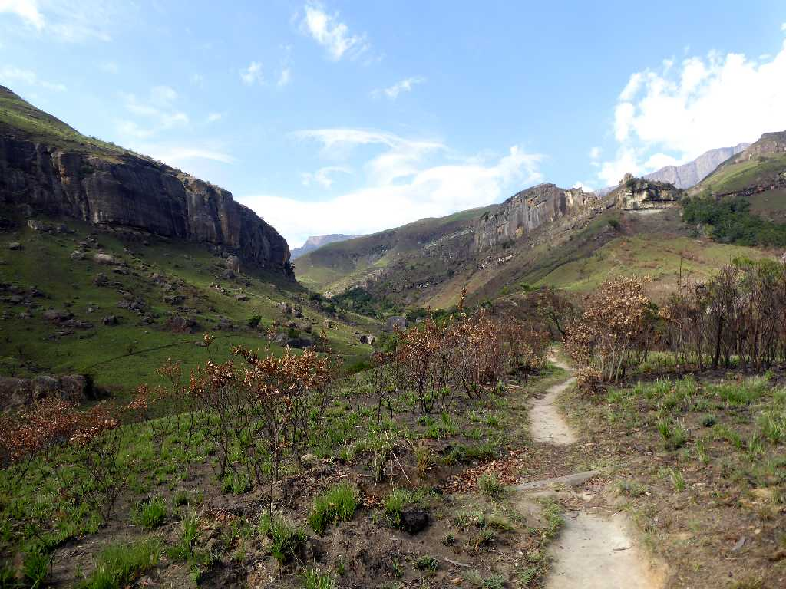
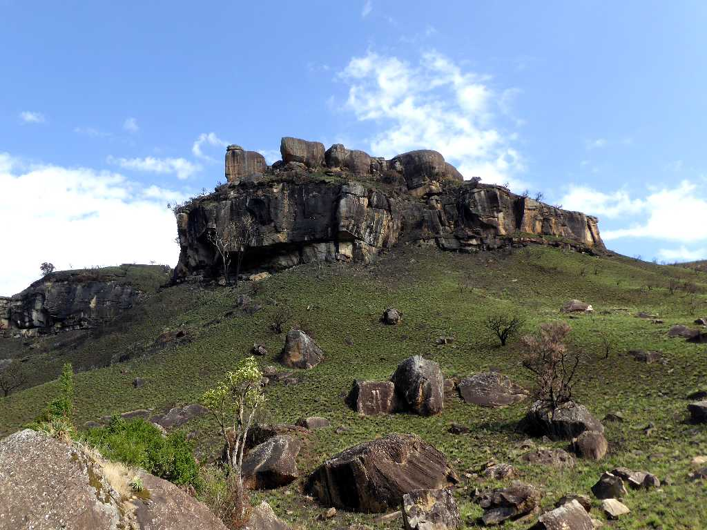
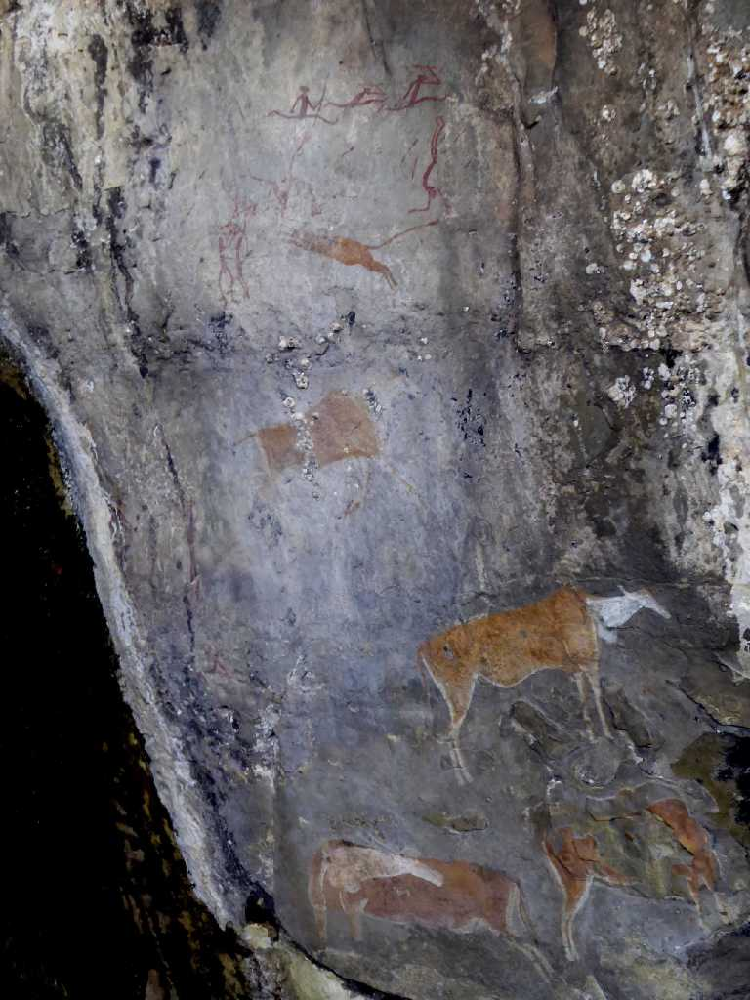
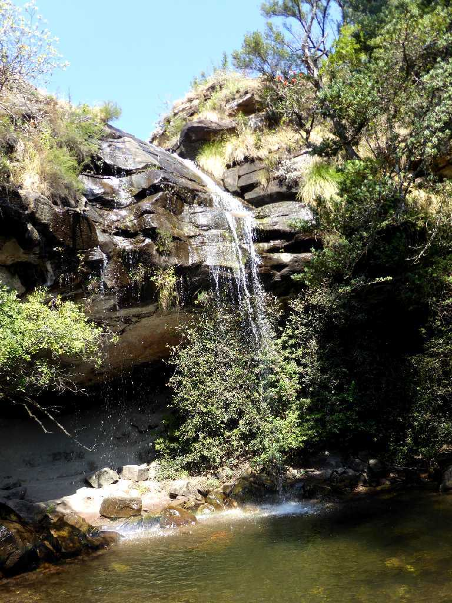
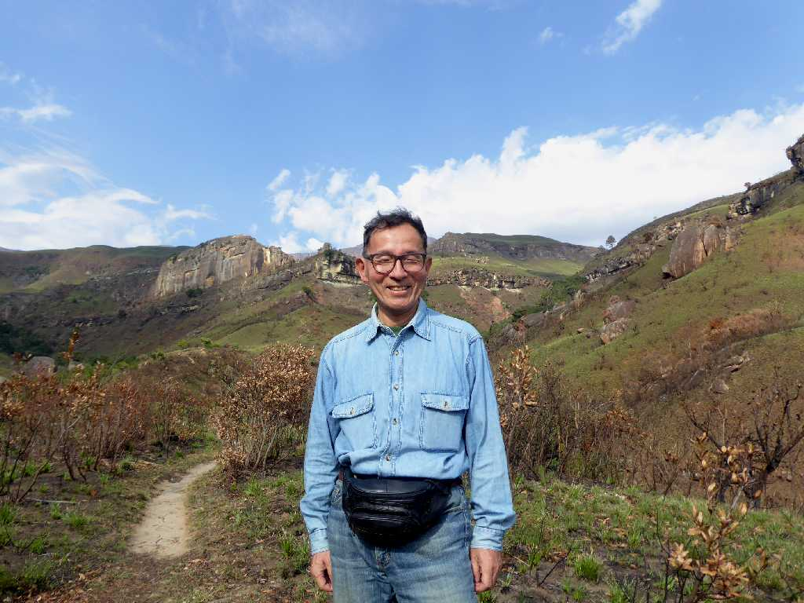

Giant's Castle Drakensberg
ドラケンスバーグ山脈のジャイアンツキャッスルで岩絵と滝を周る８ｋｍのトレッキングを楽しむ

Rock Giant's Castle
岩絵が残る岩山

San Bushmen Rock Painting Giant's Castle
約３,５００年前頃にサン族により描かれたと考えられている岩絵

Doreen Falls Giant's Castle

September 8 2018 Giant's Castle